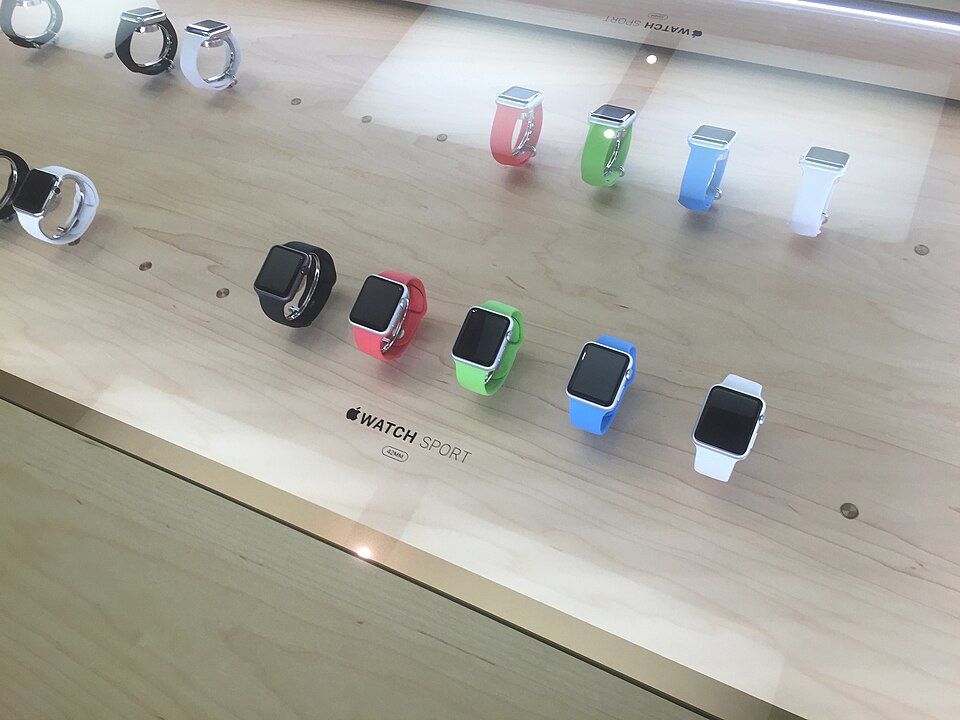

Smart Wearables and Health Clues
What your smartwatch actually measures on your wrist, and what it does with that data
Have you ever checked your watch after running to catch a bus just to see how high your heart rate went? Smartwatches and fitness bands have turned health tracking into something millions of people do every day, without needing hospital wires or clinic visits.
The green light on the back of your watch
If you take off a smartwatch while it is measuring your pulse, you will see small green LED lights blinking on the back. Why green? Because blood is red, and red liquid absorbs green light. Every time your heart beats, more blood flows through the vessels in your wrist and less green light bounces back to the sensor.
Right next to the light sensor, there is also an accelerometer that measures how your wrist moves in space. Together, these two tiny sensors collect data all day and all night.

Cleaning up a messy signal
Measuring a pulse on a wrist is much harder than in a quiet hospital bed. When you walk, type on a keyboard or wear the strap a bit too loosely, the watch slides around and the raw numbers look like noise. Machine learning helps turn that messy signal into something useful:
- Filtering out movement: the software compares the motion sensor with the light sensor and subtracts the bumps caused by your arm swinging.
- Spotting uneven rhythms: while you are sitting still, the watch checks the time gap between beats. If the rhythm stays irregular across several checks, it can warn you about possible atrial fibrillation (AFib).
- Fall detection: by learning what normal daily arm movements look like, the watch can tell the difference between slamming your hand on a table and a hard fall where you do not get back up.
A real test: the Apple Heart Study
In 2019, researchers at Stanford University ran a study with more than 400,000 Apple Watch users to see if a consumer watch could really catch heart rhythm problems. Only about 0.5% of participants received an irregular pulse notification, which showed the algorithm was not constantly scaring healthy people with false alarms. Among the people who wore a medical ECG patch afterward, about a third really did have atrial fibrillation.
Still, a smartwatch is not a doctor. A wrist sensor cannot see heart attacks, and false alerts can make some users anxious and check their pulse every five minutes. If a watch sends a health warning, it is simply a clue to book a real check-up.
Sources & Image Credits
- Image Credit: Apple Watch Sport display photo (CC BY-SA 4.0, via Wikimedia Commons) - https://commons.wikimedia.org/wiki/File:Apple_Watch_Sport.jpg
- Perez, M. V. et al. (2019), Large-Scale Assessment of a Smartwatch to Identify Atrial Fibrillation, New England Journal of Medicine: https://www.nejm.org/doi/full/10.1056/NEJMoa1901183
- Stanford Medicine - Apple Heart Study Results: https://med.stanford.edu/news/all-news/2019/11/through-apple-heart-study--stanford-medicine-researchers-show-we.html
- Apple Support - Heart rate notifications on Apple Watch: https://support.apple.com/en-us/120278